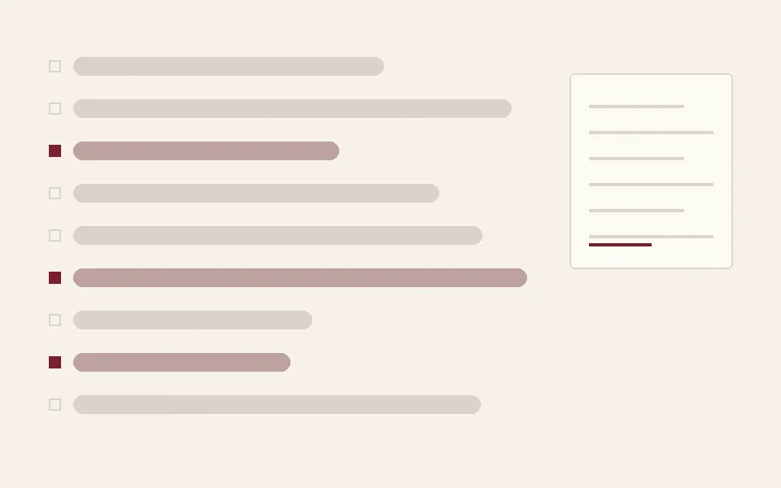

Jigsaw: Agile Community Rules

Each subreddit has its own rules, so the task is not toxicity in general but whether this comment breaks that rule in that community — a judgement with no ground-truth scalar to optimise against. The pipeline is config-driven end to end: preprocessing, training, inference and ensembling reproduce from a single declarative spec rather than a stack of edited notebooks.
The piece I care most about is the GRPO run. Qwen3-8B was trained with a from-scratch GRPO implementation on Unsloth across multiple GPUs, with the reward computed by a pool of smaller judge models served on vLLM — a model-graded reward, which means a scoring function a policy can game rather than satisfy. Watching where it drifted was as instructive as the score.
The public/private leaderboard gap was the other problem. It was stabilised with cross-validated weighted ensembling over eight models — Qwen2.5-14B and 7B, Qwen3-14B and 8B, two triplet-trained encoders, DeBERTa-v3 and BGE embeddings — on column-averaged AUC.
Field notes
2Dated entries from the work as it happened.
Metrics
3What was measured, and what it came to.
Artefacts
2Repositories, write-ups and demos.
Skills
6Kaggle · GRPO · Qwen3 · vLLM
82 / 2,445
final rank — silver, top 3.4%
8 models
in the cross-validated ensemble
GRPO
from scratch, model-graded reward via vLLM judges